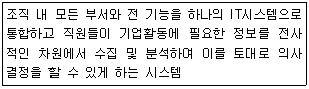
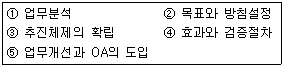
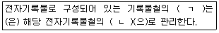
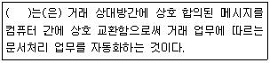
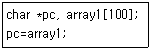
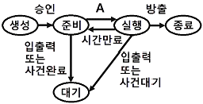
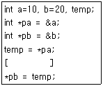

사무자동화산업기사 (2017-09-23 기출문제)
1과목: 사무자동화 시스템
1. 중앙처리장치(CPU)의 구성요소에 해당하지 않는 것은?
- PC
- IR
- MAR
- HDD
(정답률: 72%)

2. 포트번호 143을 사용하고 메시지의 헤더만을 다운로드할 수 있으며 다중 사용자 메일박스와 서버에 기반을 둔 저장 폴더를 만들어 주는 기능을 제공함으로써 스마트폰, 태블릿, 다른 PC 등의 이메일 클라이언트에서도 확인이 가능한 이메일 프로토콜은?
- POP3
- SMTP
- IMAP
- PGP
(정답률: 48%)
3. 데이터베이스의 모형에 속하지 않는 것은?
- 관계형 데이터베이스
- 정규형 데이터베이스
- 계층형 데이터베이스
- 네트워크형 데이터베이스
(정답률: 69%)
4. 프린터 인쇄 품질(해상도) 단위로 가장 적합한 것은?
- CPS
- LPM
- DPI
- PPM
(정답률: 87%)
5. 충격식 프린터에 해당하는 것은?
- 잉크제트 프린터
- 열전사 프린터
- 감열 방식 프린터
- 도트 매트릭스 프린터
(정답률: 89%)
6. 다음 설명에 가장 부합하는 시스템 명칭은?

- ERP
- SCM
- CRM
- SaaS
(정답률: 80%)
7. 다음 중 사용자가 원하는 프로그램을 한번 기억시키면 지울 수 없는 기억소자는?
- PROM
- EEPROM
- EPROM
- DRAM
(정답률: 62%)
8. 새로운 제품이나 서비스를 창조해내기 위해 하나의 소스 이상에서 얻은 콘텐츠를 쓰는 웹 사이트 또는 웹 애플리케이션을 의미하는 것은?
- 위키
- 블로그
- 소셜 태킹
- 매시업
(정답률: 78%)
9. 인터넷 사용자의 컴퓨터에 잠입하여 내부 문서, 스프레드시트, 그림(사진)파일 등을 암호화시킨 후 해동 프로그램 또는 방법을 알려주겠다며 금품을 요구하는 악성프로그램은?
- 랜섬웨어
- 비트락커
- 크립토그래피
- 스테가노그래피
(정답률: 89%)
10. 인터넷 기반 음성전화 기술로 가장 옳은 것은?
- PTZ
- VDSL
- CCTV
- VoIP
(정답률: 85%)
11. 순차접근방식의 보조기억매체는?
- Flash Memory
- LTO
- Hard Disk
- SSD
(정답률: 53%)
12. 사무자동화를 추진하는 방법 중 전사적 접근방식의 장점으로 가장 옳지 않은 것은?
- 계획의 성공에 따라 매우 큰 효과를 얻을 수 있다.
- 작은 규모 및 신설조직에 적합하다.
- 시스템 도입의 낭비를 줄일 수 있다.
- 시행착오를 크게 줄일 수 있다.
(정답률: 59%)
13. 사무자동화를 위한 정보 전송에 사용되는 기기로 가장 옳은 것은?
- CD-ROM
- FAX
- 마이크로필름
- 광디스크 시스템
(정답률: 77%)
14. 사무자동화의 계획적 도입을 5단계 순서로 바르게 나열한 것은?

- ①→②→③→④→⑤
- ②→③→①→⑤→④
- ①→②→③→⑤→④
- ②→①→③→⑤→④
(정답률: 45%)
15. 단말기 10대 정도인 소규모 사무실 단위의 사무자동화시스템 구축에 가장 적합한 통신망(네트워크)의 규모는?
- VAN
- LAN
- WAN
- MAN
(정답률: 84%)
16. MIS의 기본 구성 요소와 그 관련 설명이 가장 옳게 짝지어지지 않은 것은?
- 의사결정 Sub system – MIS의 지휘기능에 해당하며, System 설계기능도 포함
- 데이터베이스 Sub system – 체계적으로 축적된 데이터의 집합 기능
- 프로세스 Sub system – 자료 저장·검색기능
- 시스템 설계 Sub system – 의사 결정의 이론과 방법에 따라 System 구성
(정답률: 56%)
17. 원격지간 상호 통신 매체를 이용하여 동일한 시간에 회의를 할 수 있는 시스템은?
- Intelligent typewriter
- Electronic Private Branch Exchange
- Teleconference
- Keyphone
(정답률: 79%)
18. 다음 중 DBMS가 아닌 것은?
- Oracle
- MySQL
- Linux
- DB2
(정답률: 65%)
19. 사무자동화시스템 구축을 위한 통신기술에서 모바일이동통신 관련 무선통신기술이 아닌 것은?
- ADSL
- LTE
- 3G
- HSDPA
(정답률: 71%)
20. 사무자동화시스템을 평가하는 방법에 속하지 않는 것은?
- 투자 효율 산정법
- 상대적 평가법
- 정성적 평가법
- 직무별 비교법
(정답률: 59%)
2과목: 사무경영관리 개론
21. MBO(Management by Objectives)의 개념으로 가장 옳은 것은?
- 목표에 의한 관리
- 자료에 의한 관리
- 경영에 의한 관리
- 계획에 의한 관리
(정답률: 71%)
22. 사무조직의 집권화에 대한 장점이 아닌 것은?
- 기계 설비의 유휴시간이 감소되어 소요면적이 감소된다.
- 시간의 경제성을 높이고 작업량의 균일화가 가능하다.
- 의사결정에 있어서 보다 상세한 정보투입을 가능하게 한다.
- 휴가 또는 질병에 의한 결근에 대해 적절한 조치를 취할 수 있다.
(정답률: 43%)
23. 길브레스(Gilbreth)의 “동작의 경제원칙”을 가장 잘 나타내고 있는 것은?
- 발로 할 수 있는 일은 오른손을 사용한다.
- 왼손으로 할 수 있는 작업이라도 오른손을 사용한다.
- 가능한 한 양손이 동시에 작업을 시작하되 끝날 때는 각각 끝나도록 한다.
- 이 원칙은 생산작업뿐만 아니라 사무작업에서도 응용할 수 있다.
(정답률: 78%)
24. 사무량을 측정하는 방법으로 소요시간을 측정하여 여기서 얻은 수치로써 표준시간을 계정하는 방법은?
- Stop watch 법
- Work sampling 법
- Standard data 법
- Predetermined time standard 법
(정답률: 69%)
25. 고객관계관리를 의미하는 용어로 가장 옳은 것은?
- CRM
- SCM
- ERP
- POS
(정답률: 78%)
26. 다음 설명의 (ㄱ), (ㄴ)에 가장 적합한 것은?

- (ㄱ) : 색인번호, (ㄴ) : 등록정보
- (ㄱ) : 색인번호, (ㄴ) : 생산정보
- (ㄱ) : 분류번호, (ㄴ) : 등록정보
- (ㄱ) : 분류번호, (ㄴ) : 생산정보
(정답률: 70%)
27. 사무조직의 형태 중 라인조직의 장점으로 가장 적합하지 않은 것은?
- 전문화의 결여
- 단순하고 이해하기 쉬움
- 결정과 집행의 신속
- 책임소재의 명확
(정답률: 79%)
28. 다음 ( )에 가장 적합한 내용은?

- Electronic Display Interchange
- Electronic Direction Interchange
- Electronic Data Interchange
- Electronic Detective Interchange
(정답률: 76%)
29. 현대 과학적 사무관리의 추세가 아닌 것은?
- 사무관리의 표준화
- 사무관리의 통제화
- 사무관리의 간소화
- 사무관리의 전문화
(정답률: 76%)
30. VDT 증후군은 주로 어느 사무환경에 의하여 발생되는가?
- 소음발생
- 공기조절 불량
- 배선고장
- 영상표시장치
(정답률: 69%)
31. EDI의 효과에 대한 설명 중 가장 거리가 먼 것은?
- 불확실성의 감소
- 고비용, 고능률
- 오류의 감소
- 거래시간의 단축
(정답률: 84%)
32. 다음 중 행정정보 통신망 구축의 효과로 가장 거리가 먼 것은?
- 처리능력 향상
- 프로토콜의 다양성 확보
- 경제적 효과
- 신뢰성 향상
(정답률: 80%)
33. 사무작업의 표준시간에 관한 설명으로 가장 적합한 것은?
- 가장 빨리 일할 수 있는 작업시간
- 정규 작업시간에 여유시간을 더한 것
- 최대시간으로 최대의 효과를 내는 시간
- 종업원의 작업 능력에 따른 평균시간
(정답률: 77%)
34. 정보보안의 3요소가 아닌 것은?
- 기밀성
- 구속성
- 가용성
- 무결성
(정답률: 83%)
35. 자료의 십진분류 방법 중에서 우리나라의 일반자료의 분류에 많이 사용되는 분류법은?
- SDC
- UDC
- NDC
- KDC
(정답률: 79%)
36. 전자문서의 도달시기에 대하여 가장 적합하게 설명한 것은?
- 도달시기에 대한 특별한 규정이 없다.
- 수신자의 컴퓨터 파일에 기록된 때부터 그 수신자에게 전달된 것으로 본다.
- 전자서명을 작성한 때부터 그 수신자에게 전달된 것으로 본다.
- 인증기관의 확인을 받은 때부터 그 수신자에게 전달된 것으로 본다.
(정답률: 76%)
37. 사무관리규정에 의하여 서식용지의 지질 및 단위당 중량을 결정할 때, 참작할 사항이 아닌 것은?
- 복사방법
- 기재방법
- 사용목적
- 사용용도
(정답률: 48%)
38. 자료관리에 대한 설명으로 가장 옳지 않은 것은?
- 자료관리는 수집된 많은 양의 자료에서 필요한 정보를 유효하고 적절하게 얻어낼 수 있어야 한다.
- 자료관리는 자료를 필요로 하는 곳에 신속하게 전달하는 것이다.
- 자료관리는 자료의 대출, 전시, 복사, 번역서비스, 전달 등의 내용을 모두 포함한다.
- 자료관리는 자료를 수집, 분류, 정리하고 필요 없는 자료가 폐기되지 않도록 영구히 보관하는 일련의 과정이다.
(정답률: 80%)
39. 효과적이고 효율적인 사무계획이 되기 위한 요건이 아닌 것은?
- 타당성 및 합리성
- 권한의 집중화 및 강제성
- 탄력성 및 신축성
- 용이성 및 실현가능성
(정답률: 80%)
40. 힉스(B. Hicks)가 정의한 사무작업의 요소와 가장 관계없는 것은?
- 서술 및 면담
- 보고서와 기록의 준비
- 기록의 준비 및 기록의 보존
- 서신, 전화보고, 회의명령 등의 의사소통
(정답률: 52%)
3과목: 프로그래밍 일반
41. 프로그램 수행 시 묵시적 순서제어의 의미로 옳은 것은?
- 오류에 의해순서가 바뀌는 것을 묵인하는 것을 의미한다.
- 변수를 사용하지 않고 순서를 제어함을 의미한다.
- 괄호나 연산자 등의 수식에 따른 순서 제어구조를 허용하지 않음을 의미한다.
- 문법에 따라 미리 정해진 순서대로 제어가 일어나는 것을 의미한다.
(정답률: 75%)
42. Java에서 사용하는 접근제어자의 종류가 아닌 것은?
- private
- default
- public
- internal
(정답률: 63%)
43. 운영체제에서 두 개 이상의 프로세스가 동시에 접근하여 사용할 수 없는 자원은?
- cluster resource
- critical resource
- exit resource
- input resource
(정답률: 57%)
44. Postfix expression “345＋＊”의 계산된 결과는?
- 27
- 35
- 17
- 32
(정답률: 59%)
45. C언어의 포인터 조작 연산에서 변수 pc에 대입되는 것과 같은 결과를 갖는 것은?

- p=&array1[0];
- p=&array1[2];
- p=array1[10];
- p=array1[1];
(정답률: 58%)
46. 이항(Binary) 연산자가 아닌 것은?
- XOR
- OR
- AND
- COMPLEMENT
(정답률: 85%)
47. Java 언어에서 기본 데이터형을 객체 데이터형으로 바꾸어주는 클래스는?
- abstract
- super
- final
- wrapper
(정답률: 46%)
48. 촘스키 문법 구조에서 문법의 종류에 따라 사용되는 인식기의 연결이 틀린 것은?
- Type 0 문법 - 오토마타
- Type 1 문법 – 선형 제한 오토마타
- Type 2 문법 – 푸시다운 오토마타
- Type 3 문법 – 유한 오토마타
(정답률: 56%)
49. 프로세스 상태 전이도의 A에 맞는 항목은?

- 인터럽트
- 프로세스
- 블로킹
- 디스패치
(정답률: 51%)
50. 프로그램 실행 시 원시 프로그램을 문자 단위로 스캐닝 하여 문법적으로 의미 있는 일련의 문자들로 분할해 내는 역할을 하는 것은?
- 구문분석기
- 어휘분석기
- 디버거
- 선행처리기
(정답률: 60%)
51. 소프트웨어 설계에서 사용되는 대표적인 추상화 메커니즘이 아닌 것은?
- 프로토콜 추상화
- 자료 추상화
- 제어 추상화
- 기능 추상화
(정답률: 62%)
52. UNIX 파일 시스템에서 파일, 디렉토리, 간적블록을 저장하는 영역의 블록은?
- 부트블록
- 블랙블록
- inode리스트
- 데이터블록
(정답률: 71%)
53. C언어에서 포인터를 사용하여 두 변수 a, b의 값을 교체하는 경우 빈칸에 알맞은 코드는?

- b = &a;
- a = b;
- *pb = *pa;
- *pa = *pb;
(정답률: 51%)
54. C 언어에서 사용되는 데이터형이 아닌 것은?
- long
- integer
- double
- float
(정답률: 74%)
55. 프로그램의 오류 수정 작업을 위해 사용되는 소프트웨어를 무엇이라고 하는가?
- 디버거
- 링커
- 모니터
- 매크로
(정답률: 86%)
56. BNF 심볼에서 정의를 나타내는 것은?
- ::=
- <>
- Ⅰ
- -->
(정답률: 86%)
57. 운영체제의 성능 평가 요소로 거리가 먼 것은?
- 반환 시간
- 신뢰도
- 비용
- 처리 능력
(정답률: 81%)
58. 객체에서 반복적으로 수행하기 위한 명령문의 집합을 정의한 것은?
- 속성
- 메시지
- 메서드
- 추상화
(정답률: 72%)
59. 정적 바인딩 시간에 해당되는 것은?
- 링크 시간
- 모듈 기동 시간
- 프로그램 호출시간
- 실행 시간 중 객체 사용 시점
(정답률: 50%)
60. 로더(Loader)에 대한 기능이 아닌 것은?
- 할당(Allocation)
- 연결(Linking)
- 적재(Relocation)
- 번역(Compile)
(정답률: 78%)
4과목: 정보통신 개론
61. PCM 과정을 순서대로 나열한 것은?
- 부호화 → 양자화 → 표본화
- 양자화 → 표본화 → 부호화
- 표본화 → 양자화 → 부호화
- 표본화 → 부호화 → 양자화
(정답률: 83%)
62. 패킷교환 방식의 특징이 아닌 것은?
- 통신 장애 발생 시 대체 경로 선택이 가능하다.
- 패킷 형태로 만들어진 데이터를 패킷교환기가 목적지 주소에 따라 통신경로를 선택해주는 방식이다.
- 프로토콜 변환이 가능하고 디지털 전송방식에 사용된다.
- 데이터 전송 단위는 메시지이고, 교환기가 호출자의 메시지를 받아 축적한 후 피호출자에게 보내주는 방식이다.
(정답률: 58%)
63. TCP/IP 관련 응용 계층의 프로토콜이 아닌 것은?
- FTP
- TELNET
- SMTP
- UDP
(정답률: 49%)
64. 8위상편이변조(PSK)는 한 번에 몇 개의 신호비트[bit]가 전송되는가?
- 2
- 3
- 4
- 8
(정답률: 73%)
65. HDLC(High-level Data Link Control)의 링크구성 방식에 따른 동작 모드로 틀린 것은?
- SRM
- ARM
- NRM
- ABM
(정답률: 52%)
66. 비패킷형 단말이 패킷교환망을 이용할 수 있도록 패킷의 조립과 분해 기능을 제공해 주는 것은?
- Frame bursting
- Terminal
- PAD
- hop
(정답률: 74%)
67. ATM 교환기에서 처리되는 셀의 길이는?
- 24바이트
- 38바이트
- 53바이트
- 64바이트
(정답률: 71%)
68. 광섬유 케이블에서 발생되는 손실이 아닌 것은?
- 마이크로 벤딩 손실
- 코어 손실
- 산란 손실
- 동축 손실
(정답률: 57%)
69. DPCM(Differential PCM)에 대한 설명으로 틀린 것은?
- 실제 표본 값과 추정 표본 값과의 차이를 양자화 한다.
- 차동 PCM 이라고도 한다.
- 양자화 시 예측기를 사용한다.
- 가드밴드의 이용으로 채널의 이용률이 낮아진다.
(정답률: 73%)
70. WLAN 기반의 WiFi폰-CDMA이동통신 간에 적용될 수 있는 Vertical Hand Over기술은?
- UMA(Unlicensed Mobile Access)
- MIH(Medium Independent Hand Over)
- VOD(Video on Demand)
- IMS(IP Multimedia Subsystem)
(정답률: 52%)
71. IPv4에서 B 클래스의 기본 브로드캐스트 주소는?(문제 오류로 가답안 발표시 2번이 가답안으로 발표되었으나 확정답안 발표시 전항 정답처리되었습니다. 여기서는 2번을 누르면 정답 처리 됩니다.)
- 255.0.0.0
- 255.255.0.0
- 255.255.255.0
- 255.255.255.255
(정답률: 76%)
72. 통신 속도가 50보오(baud)인 전송부호의 최단펄스의 시간길이는 몇 초인가?
- 1
- 0.02
- 0.5
- 5
(정답률: 78%)
73. 양방향으로 데이터 전송이 가능하나, 동시에 양방향으로는 전송할 수 없는 방식은?
- 단방향방식
- 반이중방식
- 양방향방식
- 전이중방식
(정답률: 84%)
74. 전송효율을 최대한 높이려고 데이터 블록의 길이를 동적으로 변경시켜 전송하는 ARQ 방식은?
- Selective Repeat ARQ
- Adaptive ARQ
- Go-back-N ARQ
- Stop and Wait ARQ
(정답률: 75%)
75. 회선교환방식에 대한 설명 중 맞는 것은?
- 축적 교환 방식이라고도 한다.
- 전송에 실패한 패킷에 대해 재전송 요구가 가능하다.
- 여러 노드가 동시에 가상회선을 가질 수 있다.
- 고정적인 대역폭을 갖는다.
(정답률: 64%)
76. IP주소로 노드의 물리적 주소를 찾을 때, 사용하는 프로토콜은?
- ICMP
- IGMP
- ARP
- RIP
(정답률: 51%)
77. 대역폭 W인 채널을 통해 잡음 N이 섞인 신호 S를 전송할 때, 샤논의 정리에 의한 채널용량(bps) 산출식은?
- Wlog2(1＋S/N)
- Wloge(S＋N)
- log2(W×N×S)
- loge(1＋W×N/S)
(정답률: 73%)
78. 전송할 데이터가 있는 단말장치에 타임 슬롯을 할당함으로써 전송 효율을 높일 수 있는 방식은?
- 위상 다중화
- 광대역 다중화
- 통계적 시분할 다중화
- 주파수 분할 다중화
(정답률: 65%)
79. 통신프로토콜의 구성요소에 해당되지 않는 것은?
- 패킷(Packet)
- 구문(Syntax)
- 의미(Semantics)
- 순서(Timing)
(정답률: 70%)
80. Bellman-Ford 알고리즘을 사용하는 라우팅은?
- 거리 벡터 라우팅
- 링크 상태 라우팅
- 비트맵 라우팅
- 벡터 링크 라우팅
(정답률: 45%)